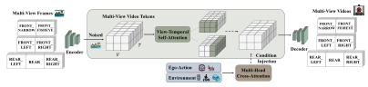

Ego-action control
This video could not be loaded. Please reload the page to retry.
Starting from the same scene, vary ego-motion conditions such as speed and curvature to generate straight driving, acceleration and turns.
XPENG GWM TEAM RESEARCH
A controllable multi-camera world model.
Generate future driving observations from multi-view history and ego actions, with optional control over the scene and its appearance.
01OVERVIEW
X-World models how a driving scene evolves under a specified action sequence. It generates synchronized multi-camera video directly in observation space.
02CAPABILITIES
Four demonstrations of action following, scene control, temporal continuity and appearance editing.
This video could not be loaded. Please reload the page to retry.
Starting from the same scene, vary ego-motion conditions such as speed and curvature to generate straight driving, acceleration and turns.
This video could not be loaded. Please reload the page to retry.
Condition on traffic participants, road boundaries and lane markings. Compare the generated scene with these spatial controls across views.
This video could not be loaded. Please reload the page to retry.
Generate future video chunk by chunk. Follow the continuity of motion, geometry and appearance across time and camera views.
This video could not be loaded. Please reload the page to retry.
Keep ego actions and scene conditions fixed while text prompts change weather and time of day. All frames are generated in this C2V setting.
03METHOD
A multi-view latent video generator, built on WAN 2.2 5B, combines visual history with distinct control signals.

Alternating attention across cameras and timesteps models shared geometry, object identity and motion.
Ego actions use adaptive normalization; camera parameters use additive embeddings. Separate cross-attention branches handle dynamic agents, static elements and text.
A 3D causal VAE encodes video into a compact representation. A multi-view DiT generates future latents that are decoded back into camera observations.
STAGE I
Bidirectional training on synchronized short clips establishes action following, scene control and cross-view modeling.
Bidirectional generation · typically ~50 denoising stepsSTAGE II
A causal model uses self-forcing and distribution matching distillation. A rolling KV cache carries recent context into subsequent chunks.
Causal generation · 4 denoising steps per chunk04CITATION
If X-World supports your research, please cite our technical report.
@misc{zheng2026xworld,
title={X-World: Controllable Ego-Centric Multi-Camera World Models for Scalable End-to-End Driving},
author={Chaoda Zheng and Sean Li and Jinhao Deng and Zhennan Wang and Shijia Chen and Liqiang Xiao and Ziheng Chi and Hongbin Lin and Kangjie Chen and Boyang Wang and Yu Zhang and Xianming Liu},
year={2026},
eprint={2603.19979},
archivePrefix={arXiv},
primaryClass={cs.CV},
url={https://arxiv.org/abs/2603.19979}
}